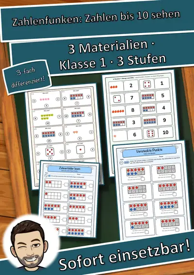
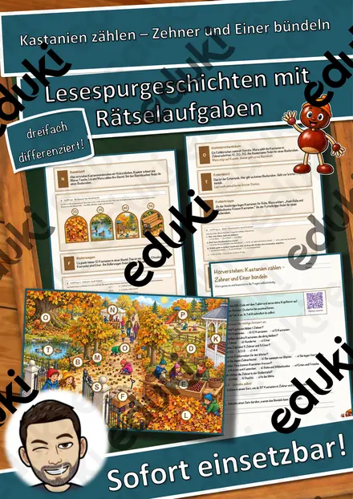
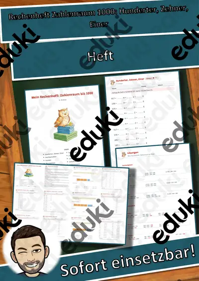
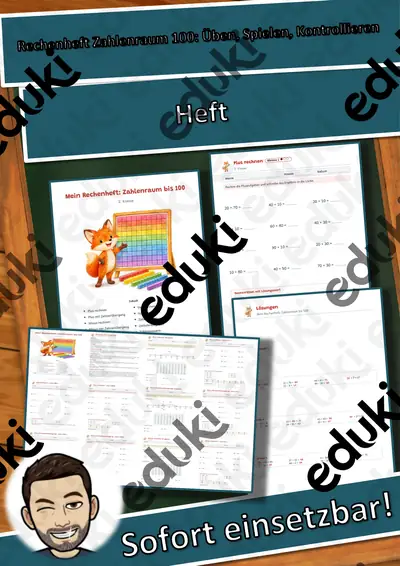
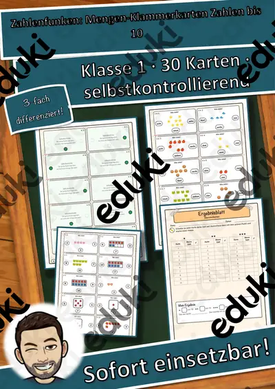
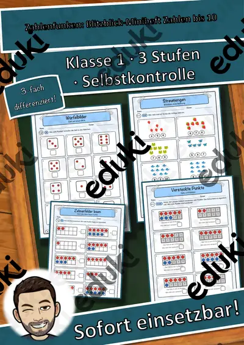

Zahlenraum und Stellenwerte: Arbeitsblätter für Klasse 1–4 (Mathematik)
Der Zahlenraum wächst in Klasse 1 bis 4 von 10 bis zur Million. Stellenwerte, Zahlenstrahl und Zählen in Schritten tragen das Verständnis von Zahlen.
Gearbeitet wird in der Regel an Zahlenstrahl, Stellenwerttafel und Zehner und Hunderter, ergänzt um Tausender, Million und römische Zahlen.
Wo genau im Lehrplan das Thema steht, unterscheidet sich von Land zu Land, häufig im Fach Mathematik in der Grundschule. Gemeinsames Ziel: die Kinder lesen, schreiben und ordnen Zahlen und erklären Stellenwerte.
Für den Einstieg in Zahlenraum und Stellenwerte bieten sich Aufgaben zu Zahlenstrahl an, zum Üben solche zu Stellenwerttafel und Zehner und Hunderter, zur Wiederholung vor einer Lernkontrolle ein Blick auf römische Zahlen. Die Lösungen liegen bei, sodass im Unterricht niemand nachschlagen muss. Leistungsstarke und schwächere Lesende erhalten über die Lesespurgeschichten Texte in drei Stufen.
Zum Thema finden Sie 15 Materialien, unter anderem Zahlenfunken Materialpaket, Ziffern-Schreibwerkstatt Materialpaket: Zahlen und Rechenheft Zahlenraum 1000: Hunderter, Zehner, verteilt auf 1 Lesespurgeschichte und 1 Lückentext mit Hörverstehen in Klasse 1–5. Arbeitsmaterial wie Mehrsystemblöcke macht den Stellenwert sichtbar, bevor abstrakt gerechnet wird.
Das gehört zum Thema
Passende Arbeitsblätter und Materialpakete

Zahlenfunken Materialpaket: Blitzblick-Miniheft, Mengen-Klammerkarten, Zahlen-Bingo und Domino – Zahlen bis 10 sehen (Klasse 1)

Ziffern-Schreibwerkstatt Materialpaket: Zahlen 0 bis 20 schreiben, zählen, verstehen – 3 Hefte in 3 Stufen (Vorschule, Klasse 1, DaZ)

Kastanien zählen – Zehner und Einer bündeln – Lesespurgeschichte mit Rätselaufgaben (Klasse 2)

Million Lückentext mit Wortspeicher Hörverstehen und Suchsel

Rechenheft Zahlenraum 1000: Hunderter, Zehner, Einer

Rechenheft Zahlenraum 100: Üben, Spielen, Kontrollieren

Rechenheft Zahlenraum 20: Übungsheft mit Selbstkontrolle
Zahlenfunken: Zahlen-Bingo und Domino bis 10 – zwei Spiele zu Menge, Ziffer und Zahlwort in 3 Stufen (Klasse 1)

Zahlenfunken: Mengen-Klammerkarten Zahlen bis 10 – 30 selbstkontrollierende Karten in 3 Stufen (Klasse 1)

Zahlenfunken: Blitzblick-Miniheft Zahlen bis 10 – Mengen auf einen Blick erfassen, 3 Stufen mit Lösungen (Klasse 1, DaZ)

Ziffern-Schreibwerkstatt Zahlen 11 bis 20 im Weltall – Spuren, Schreiben, Zählen in 3 Stufen (Vorschule, Klasse 1, DaZ)

Ziffern-Schreibwerkstatt Ziffern 6 bis 10 im Meer – Spuren, Schreiben, Zählen in 3 Stufen (Vorschule, Klasse 1, DaZ)

Ziffern-Schreibwerkstatt Ziffern 0 bis 5 auf dem Bauernhof – Spuren, Schreiben, Zählen in 3 Stufen (Vorschule, Klasse 1, DaZ)

Römische Zahlen Tafelmaterial, Römische Zahlen

Römische Zahlen, Arbeitsblätter Römische Zahlen
Häufige Fragen
Für welche Klassenstufe passen die Arbeitsblätter zu Zahlenraum und Stellenwerte?
Die 15 Materialien zu diesem Thema sind für Klasse 1–5 ausgelegt, die meisten davon für Klasse 1. Einzelne Titel lassen sich mit Anpassung auch eine Stufe darunter oder darüber einsetzen.
Welche Inhalte decken die Materialien zu Zahlenraum und Stellenwerte ab?
Inhaltlich reicht die Auswahl von Zahlenstrahl über Stellenwerttafel und Zehner und Hunderter bis zu Million; Details stehen bei den einzelnen Materialien.
Wie setze ich Zahlenraum und Stellenwerte im Unterricht ein?
Beginnen Sie mit einem Einstieg zu Zahlenstrahl und ergänzen Sie nach Bedarf. Arbeitsmaterial wie Mehrsystemblöcke macht den Stellenwert sichtbar, bevor abstrakt gerechnet wird.
Mehr Material nach Fach und Klasse
Verwandte Lehrplanthemen
- Addition und Subtraktion (Mathematik, Klasse 1–4)
- Das kleine Einmaleins (Mathematik, Klasse 2–4)
- Geometrie: Körper, Flächen und Formen (Mathematik, Klasse 1–6)
- Größen, Einheiten und Uhrzeit (Mathematik, Klasse 2–6)
- Brüche und Dezimalzahlen (Mathematik, Klasse 5–7)